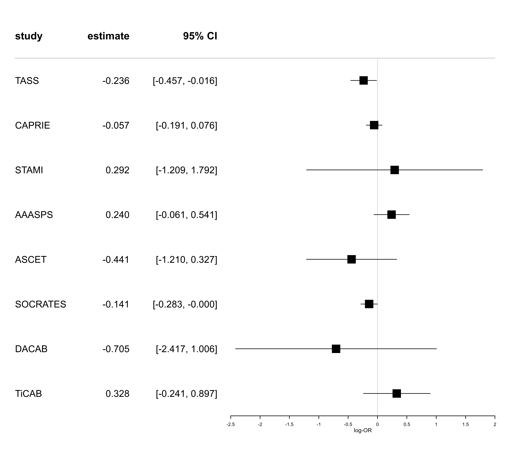
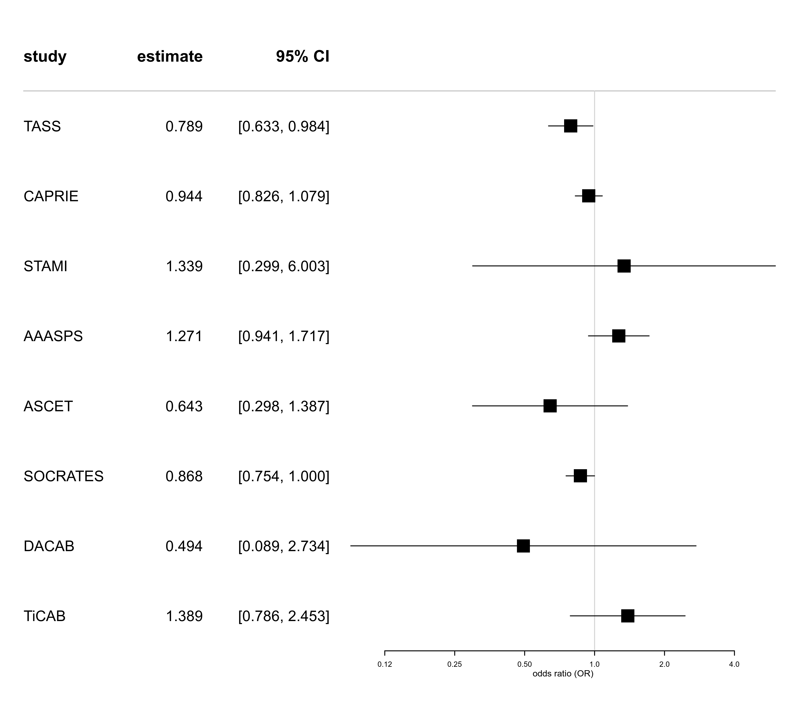
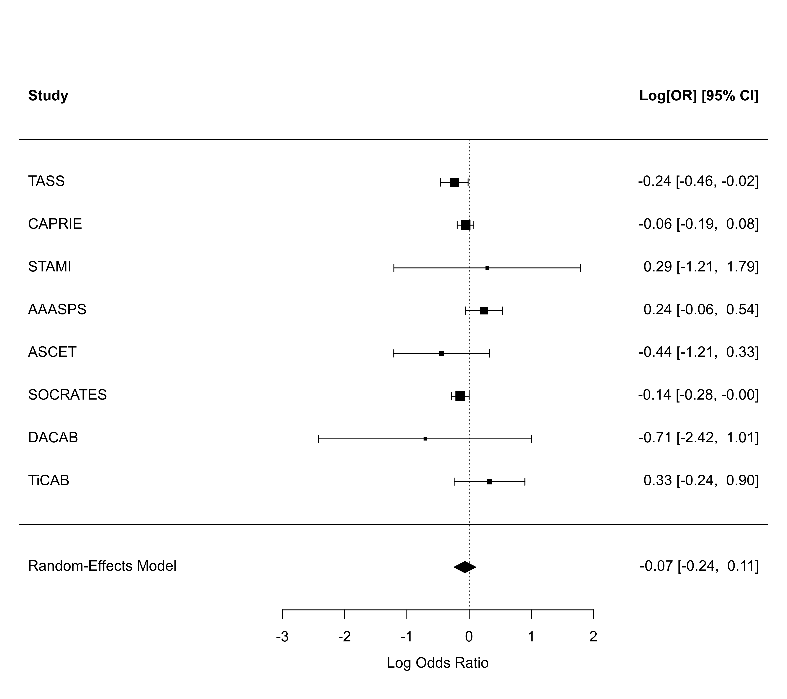
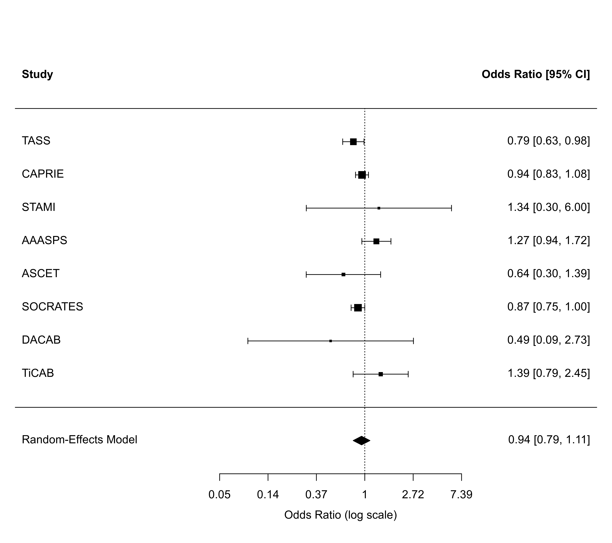
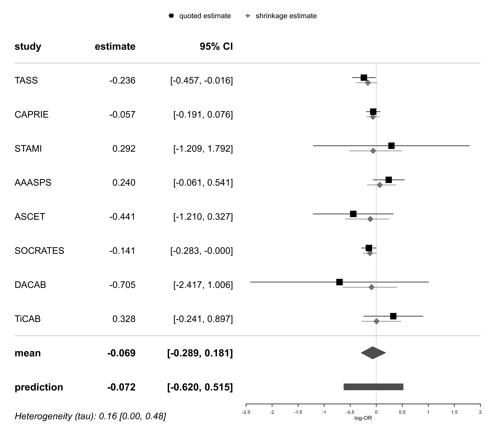
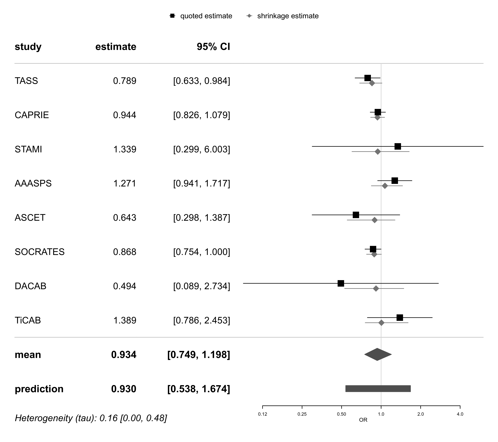

dat.chiarito2020.RdData on baseline parameters, efficacy endpoints and risk-of-bias from nine studies.
dat.chiarito2020The data frame contains the following columns:
| study | character | study identifier |
| year | numeric | publication year |
| p2y12 | character | type of P2Y12 inhibitor |
| duration.months | numeric | study duration |
| p2y12.daily.dosage | character | daily dosage of P2Y12 inhibitor |
| aspirin.daily.dosage | character | daily dosage of aspirin |
| p2y12.daily.mg | numeric | daily dose of P2Y12 inhibitor (mg) |
| aspirin.daily.mg | numeric | daily dose of aspirin (mg) |
| baseline.age | numeric | mean age at baseline |
| baseline.males | numeric | proportion of males in study population |
| baseline.diabetes | numeric | proportion of diabetic patients in study population |
| baseline.hypertension | numeric | proportion of patients with hypertension in study population |
| baseline.dyslipidaemia | numeric | proportion of patients with dyslipidaemia in study population |
| p2y12.mi | numeric | number of patients with myocardial infarction in experimental group |
| p2y12.stroke | numeric | number of patients with stroke in experimental group |
| p2y12.death | numeric | number of deaths in experimental group |
| p2y12.vdeath | numeric | number of vascular deaths in experimental group |
| p2y12.total | numeric | total number of patients experimental group |
| aspirin.mi | numeric | number of patients with myocardial infarction in control group |
| aspirin.stroke | numeric | number of patients with stroke in control group |
| aspirin.death | numeric | number of deaths in control group |
| aspirin.vdeath | numeric | number of vascular deaths in control group |
| aspirin.total | numeric | total number of patients in control group |
| rob.R | factor | risk of bias arising from the randomization process (R) |
| rob.D | factor | risk of bias due to deviations from intended interventions (D) |
| rob.Mi | factor | risk of bias due to missing outcome data (Mi) |
| rob.Me | factor | risk of bias in measurement of the outcome (Me) |
| rob.S | factor | risk of bias in selection of the reported result (S) |
| rob.overall | factor | overall risk of bias |
Chiarito et al. (2020) reviewed studies investigating the efficacy of P2Y12-inhibitors (compared to aspirin) for the secondary prevention of myocardial infarction in patients with established atherosclerosis.
A diagnosis of atherosclerosis, the development of lesions in arteries, is a risk factor for myocardial infarction or stroke, and a range of therapies (including aspirin, other drugs, or surgery) are available. P2Y12-inhibitors are antiplatelet drugs and as such might serve as an alternative to the commonly used aspirin; it was of interest to review and summarize the current scientific evidence on the efficacy of this type of drug in comparison to aspirin. To this end, Chiarito et al. (2020) performed a systematic review and meta-analysis; the systematic review had been pre-registered (PROSPERO CRD42018115037), and the investigation included a risk-of-bias assessment of the nine studies included. Co-primary endpoints were myocardial infarction and stroke, secondary endpoints were death and vascular death.
Chiarito, M., Sanz-Sánchez, J., Cannata, F., Cao, D., Sturla, M., Panico, C., Godino, C., Regazzoli, D., Reimers, B., De Caterina, R., Condorelli, G., Ferrante, G., & Stefanini, G. G. (2020). Monotherapy with a P2Y12 inhibitor or aspirin for secondary prevention in patients with established atherosclerosis: A systematic review and meta-analysis. The Lancet, 395(10235), 1487–1495. https://doi.org/10.1016/s0140-6736(20)30315-9
Zapf, A., Röver, C. (2023). Metaanalyse. In J. Gertheiss, M. Schmid, & M. Spindler (Eds.), Moderne Verfahren der Angewandten Statistik. Berlin, Germany: Springer Spektrum. https://doi.org/10.1007/978-3-662-63496-7_19-1
medicine, cardiology, odds ratios, risk-of-bias
dat.chiarito2020
#> study year p2y12 duration.months p2y12.daily.dosage aspirin.daily.dosage p2y12.daily.mg
#> 1 TASS 1989 ticlopidine 36 250mg twice 650mg twice 500
#> 2 CAPRIE 1996 clopidogrel 36 75mg once 325mg once 75
#> 3 STAMI 2001 ticlopidine 6 250mg twice 80mg twice 500
#> 4 AAASPS 2003 ticlopidine 24 250mg twice 325mg twice 500
#> 5 CADET 2004 clopidogrel 6 75mg once 75mg once 75
#> 6 ASCET 2012 clopidogrel 24 75mg once 75mg once 75
#> 7 SOCRATES 2016 ticagrelor 3 90mg twice 100mg once 180
#> 8 DACAB 2018 ticagrelor 12 90mg twice 100mg once 180
#> 9 TiCAB 2019 ticagrelor 12 90mg twice 100mg once 180
#> aspirin.daily.mg baseline.age baseline.males baseline.diabetes baseline.hypertension
#> 1 1300 62.9 0.647 0.194 0.392
#> 2 325 62.5 0.719 0.200 0.515
#> 3 160 59.2 0.838 0.149 0.336
#> 4 650 61.3 0.465 0.407 0.850
#> 5 75 62.6 0.809 NA NA
#> 6 75 62.4 0.782 0.199 0.554
#> 7 100 65.8 0.584 0.243 0.737
#> 8 100 63.6 0.828 0.427 0.728
#> 9 100 66.7 0.849 0.359 0.899
#> baseline.dyslipidaemia p2y12.mi p2y12.stroke p2y12.death p2y12.vdeath p2y12.total aspirin.mi
#> 1 0.365 NA 162 175 120 1529 NA
#> 2 0.410 275 438 560 373 9599 333
#> 3 0.360 8 4 7 6 734 18
#> 4 0.385 9 106 45 23 902 8
#> 5 NA 1 NA 5 NA 94 6
#> 6 NA 18 11 5 NA 499 18
#> 7 0.380 25 385 68 41 6589 21
#> 8 0.731 2 2 0 0 166 3
#> 9 0.817 19 29 22 11 931 30
#> aspirin.stroke aspirin.death aspirin.vdeath aspirin.total rob.R rob.D rob.Mi
#> 1 201 196 116 1540 some concerns low risk low risk
#> 2 462 571 405 9586 low risk low risk low risk
#> 3 3 5 5 736 some concerns low risk low risk
#> 4 86 40 19 907 low risk some concerns low risk
#> 5 NA 3 NA 90 low risk low risk low risk
#> 6 17 4 NA 502 low risk some concerns low risk
#> 7 441 58 35 6610 low risk low risk low risk
#> 8 4 3 2 166 low risk some concerns low risk
#> 9 21 23 13 928 low risk low risk low risk
#> rob.Me rob.S rob.overall
#> 1 low risk low risk some concerns
#> 2 low risk low risk low risk
#> 3 low risk low risk some concerns
#> 4 low risk low risk some concerns
#> 5 low risk low risk low risk
#> 6 low risk low risk some concerns
#> 7 low risk low risk low risk
#> 8 low risk low risk some concerns
#> 9 some concerns some concerns some concerns
library(metafor)
library(meta)
library(bayesmeta)
# show plain data on stroke
dat.chiarito2020[-5, c("study","p2y12.stroke","p2y12.total","aspirin.stroke","aspirin.total")]
#> study p2y12.stroke p2y12.total aspirin.stroke aspirin.total
#> 1 TASS 162 1529 201 1540
#> 2 CAPRIE 438 9599 462 9586
#> 3 STAMI 4 734 3 736
#> 4 AAASPS 106 902 86 907
#> 6 ASCET 11 499 17 502
#> 7 SOCRATES 385 6589 441 6610
#> 8 DACAB 2 166 4 166
#> 9 TiCAB 29 931 21 928
# show event rates in both treatment groups
cbind.data.frame("study" = dat.chiarito2020$study,
"p2y12" = dat.chiarito2020$p2y12.stroke / dat.chiarito2020$p2y12.total,
"aspirin" = dat.chiarito2020$aspirin.stroke / dat.chiarito2020$aspirin.total)
#> study p2y12 aspirin
#> 1 TASS 0.105951602 0.130519481
#> 2 CAPRIE 0.045629753 0.048195285
#> 3 STAMI 0.005449591 0.004076087
#> 4 AAASPS 0.117516630 0.094818082
#> 5 CADET NA NA
#> 6 ASCET 0.022044088 0.033864542
#> 7 SOCRATES 0.058430718 0.066717095
#> 8 DACAB 0.012048193 0.024096386
#> 9 TiCAB 0.031149302 0.022629310
# compute effect measures (log-ORs)
# (using the "escalc()" function from the "metafor" package)
es.stroke <- escalc(measure="OR",
ai=p2y12.stroke, n1i=p2y12.total,
ci=aspirin.stroke, n2i=aspirin.total,
slab=study, subset=is.finite(p2y12.stroke),
data=dat.chiarito2020)
# show effect measures (log-ORs)
summary(es.stroke)
#>
#> study year p2y12 duration.months p2y12.daily.dosage aspirin.daily.dosage p2y12.daily.mg
#> 1 TASS 1989 ticlopidine 36 250mg twice 650mg twice 500
#> 2 CAPRIE 1996 clopidogrel 36 75mg once 325mg once 75
#> 3 STAMI 2001 ticlopidine 6 250mg twice 80mg twice 500
#> 4 AAASPS 2003 ticlopidine 24 250mg twice 325mg twice 500
#> 6 ASCET 2012 clopidogrel 24 75mg once 75mg once 75
#> 7 SOCRATES 2016 ticagrelor 3 90mg twice 100mg once 180
#> 8 DACAB 2018 ticagrelor 12 90mg twice 100mg once 180
#> 9 TiCAB 2019 ticagrelor 12 90mg twice 100mg once 180
#> aspirin.daily.mg baseline.age baseline.males baseline.diabetes baseline.hypertension
#> 1 1300 62.9 0.647 0.194 0.392
#> 2 325 62.5 0.719 0.200 0.515
#> 3 160 59.2 0.838 0.149 0.336
#> 4 650 61.3 0.465 0.407 0.850
#> 6 75 62.4 0.782 0.199 0.554
#> 7 100 65.8 0.584 0.243 0.737
#> 8 100 63.6 0.828 0.427 0.728
#> 9 100 66.7 0.849 0.359 0.899
#> baseline.dyslipidaemia p2y12.mi p2y12.stroke p2y12.death p2y12.vdeath p2y12.total aspirin.mi
#> 1 0.365 NA 162 175 120 1529 NA
#> 2 0.410 275 438 560 373 9599 333
#> 3 0.360 8 4 7 6 734 18
#> 4 0.385 9 106 45 23 902 8
#> 6 NA 18 11 5 NA 499 18
#> 7 0.380 25 385 68 41 6589 21
#> 8 0.731 2 2 0 0 166 3
#> 9 0.817 19 29 22 11 931 30
#> aspirin.stroke aspirin.death aspirin.vdeath aspirin.total rob.R rob.D rob.Mi
#> 1 201 196 116 1540 some concerns low risk low risk
#> 2 462 571 405 9586 low risk low risk low risk
#> 3 3 5 5 736 some concerns low risk low risk
#> 4 86 40 19 907 low risk some concerns low risk
#> 6 17 4 NA 502 low risk some concerns low risk
#> 7 441 58 35 6610 low risk low risk low risk
#> 8 4 3 2 166 low risk some concerns low risk
#> 9 21 23 13 928 low risk low risk low risk
#> rob.Me rob.S rob.overall yi vi sei zi pval ci.lb ci.ub
#> 1 low risk low risk some concerns -0.2364 0.0126 0.1124 -2.1039 0.0354 -0.4566 -0.0162
#> 2 low risk low risk low risk -0.0574 0.0047 0.0683 -0.8402 0.4008 -0.1913 0.0765
#> 3 low risk low risk some concerns 0.2918 0.5861 0.7656 0.3811 0.7031 -1.2087 1.7922
#> 4 low risk low risk some concerns 0.2400 0.0235 0.1534 1.5645 0.1177 -0.0607 0.5407
#> 6 low risk low risk some concerns -0.4415 0.1538 0.3922 -1.1256 0.2603 -1.2102 0.3273
#> 7 low risk low risk low risk -0.1415 0.0052 0.0720 -1.9639 0.0495 -0.2826 -0.0003
#> 8 low risk low risk some concerns -0.7054 0.7623 0.8731 -0.8080 0.4191 -2.4166 1.0058
#> 9 some concerns some concerns some concerns 0.3283 0.0843 0.2904 1.1306 0.2582 -0.2408 0.8974
#>
# show effect measures (ORs und 95 percent CI)
cbind("study" = es.stroke$study,
exp(summary(es.stroke)[,c("yi","ci.lb","ci.ub")]))
#>
#> study yi ci.lb ci.ub
#> 1 TASS 0.7895 0.6334 0.9840
#> 2 CAPRIE 0.9442 0.8259 1.0795
#> 3 STAMI 1.3388 0.2986 6.0029
#> 4 AAASPS 1.2713 0.9411 1.7172
#> 6 ASCET 0.6431 0.2981 1.3872
#> 7 SOCRATES 0.8681 0.7538 0.9997
#> 8 DACAB 0.4939 0.0892 2.7341
#> 9 TiCAB 1.3886 0.7860 2.4532
#>
# show data in a forest plot
forestplot(es.stroke, xlab="log-OR")

forestplot(es.stroke, expo=TRUE, xlog=TRUE, xlab="odds ratio (OR)")

############################################################
# meta-analysis (frequentist, "metafor" package)
# using default settings (random-effects model, REML-estimator)
rma.uni(es.stroke)
#>
#> Random-Effects Model (k = 8; tau^2 estimator: REML)
#>
#> tau^2 (estimated amount of total heterogeneity): 0.0131 (SE = 0.0180)
#> tau (square root of estimated tau^2 value): 0.1144
#> I^2 (total heterogeneity / total variability): 41.78%
#> H^2 (total variability / sampling variability): 1.72
#>
#> Test for Heterogeneity:
#> Q(df = 7) = 10.6797, p-val = 0.1532
#>
#> Model Results:
#>
#> estimate se zval pval ci.lb ci.ub
#> -0.0678 0.0713 -0.9499 0.3422 -0.2076 0.0720
#>
#> ---
#> Signif. codes: 0 ‘***’ 0.001 ‘**’ 0.01 ‘*’ 0.05 ‘.’ 0.1 ‘ ’ 1
#>
# analysis using Paule-Mandel estimator and HKSJ intervals
rma01 <- rma.uni(es.stroke, method="PM", test="knha")
# show results
rma01
#>
#> Random-Effects Model (k = 8; tau^2 estimator: PM)
#>
#> tau^2 (estimated amount of total heterogeneity): 0.0144 (SE = 0.0230)
#> tau (square root of estimated tau^2 value): 0.1198
#> I^2 (total heterogeneity / total variability): 44.07%
#> H^2 (total variability / sampling variability): 1.79
#>
#> Test for Heterogeneity:
#> Q(df = 7) = 10.6797, p-val = 0.1532
#>
#> Model Results:
#>
#> estimate se tval df pval ci.lb ci.ub
#> -0.0666 0.0733 -0.9090 7 0.3936 -0.2398 0.1066
#>
#> ---
#> Signif. codes: 0 ‘***’ 0.001 ‘**’ 0.01 ‘*’ 0.05 ‘.’ 0.1 ‘ ’ 1
#>
# illustrate in a forest plot
forest(rma01)

forest(rma01, atransf=exp)

############################################################
# meta-analysis (frequentist, "meta" package)
# analogous analysis to above, using the "meta" package
meta01 <- metabin(event.e=p2y12.stroke, n.e=p2y12.total,
event.c=aspirin.stroke, n.c=aspirin.total,
studlab=study, data=dat.chiarito2020,
subset=is.finite(p2y12.stroke),
sm="OR",
method.tau="PM",
method.random.ci="HK", method="Inverse")
meta01
#> Number of studies: k = 8
#> Number of observations: o = 41924 (o.e = 20949, o.c = 20975)
#> Number of events: e = 2372
#>
#> OR 95%-CI z|t p-value
#> Common effect model 0.9173 [0.8437; 0.9972] -2.02 0.0429
#> Random effects model 0.9356 [0.7868; 1.1125] -0.91 0.3936
#>
#> Quantifying heterogeneity (with 95%-CIs):
#> tau^2 = 0.0144 [0.0000; 0.2873]; tau = 0.1198 [0.0000; 0.5360]
#> I^2 = 34.5% [0.0%; 71.0%]; H = 1.24 [1.00; 1.86]
#>
#> Test of heterogeneity:
#> Q d.f. p-value
#> 10.68 7 0.1532
#>
#> Details of meta-analysis methods:
#> - Inverse variance method
#> - Paule-Mandel estimator for tau^2
#> - Q-Profile method for confidence interval of tau^2 and tau
#> - Calculation of I^2 based on Q
#> - Hartung-Knapp adjustment for random effects model (df = 7)
summary(meta01)
#> OR 95%-CI %W(common) %W(random)
#> TASS 0.7895 [0.6334; 0.9840] 14.4 19.9
#> CAPRIE 0.9442 [0.8259; 1.0795] 39.0 28.2
#> STAMI 1.3388 [0.2986; 6.0029] 0.3 0.9
#> AAASPS 1.2713 [0.9411; 1.7172] 7.7 14.2
#> ASCET 0.6431 [0.2981; 1.3872] 1.2 3.2
#> SOCRATES 0.8681 [0.7538; 0.9997] 35.0 27.5
#> DACAB 0.4939 [0.0892; 2.7341] 0.2 0.7
#> TiCAB 1.3886 [0.7860; 2.4532] 2.2 5.4
#>
#> Number of studies: k = 8
#> Number of observations: o = 41924 (o.e = 20949, o.c = 20975)
#> Number of events: e = 2372
#>
#> OR 95%-CI z|t p-value
#> Common effect model 0.9173 [0.8437; 0.9972] -2.02 0.0429
#> Random effects model 0.9356 [0.7868; 1.1125] -0.91 0.3936
#>
#> Quantifying heterogeneity (with 95%-CIs):
#> tau^2 = 0.0144 [0.0000; 0.2873]; tau = 0.1198 [0.0000; 0.5360]
#> I^2 = 34.5% [0.0%; 71.0%]; H = 1.24 [1.00; 1.86]
#>
#> Test of heterogeneity:
#> Q d.f. p-value
#> 10.68 7 0.1532
#>
#> Details of meta-analysis methods:
#> - Inverse variance method
#> - Paule-Mandel estimator for tau^2
#> - Q-Profile method for confidence interval of tau^2 and tau
#> - Calculation of I^2 based on Q
#> - Hartung-Knapp adjustment for random effects model (df = 7)
forest(meta01)
############################################################
# meta-analysis (Bayesian, "bayesmeta" package)
# analysis using default settings (uniform prior for mu und tau)
bma01 <- bayesmeta(es.stroke)
# show results
bma01
#> 'bayesmeta' object.
#>
#> 8 estimates:
#> TASS, CAPRIE, STAMI, AAASPS, ASCET, SOCRATES, DACAB, TiCAB
#>
#> tau prior (improper):
#> uniform(min=0, max=Inf)
#>
#> mu prior (improper):
#> uniform(min=-Inf, max=Inf)
#>
#> ML and MAP estimates:
#> tau mu
#> ML joint 0.000000e+00 -0.08633440
#> ML marginal 1.143849e-01 -0.07697409
#> MAP joint 3.852512e-06 -0.08633224
#> MAP marginal 1.143878e-01 -0.07699909
#>
#> marginal posterior summary:
#> tau mu
#> mode 0.1143878 -0.07699909
#> median 0.1604488 -0.06874389
#> mean 0.1934478 -0.06373887
#> sd 0.1553690 0.11481488
#> 95% lower 0.0000000 -0.28867455
#> 95% upper 0.4798347 0.18065023
#>
#> (quoted intervals are shortest credible intervals.)
# show forest plots (for log-OR and OR)
forestplot(bma01, xlab="log-OR")

forestplot(bma01, exponentiate=TRUE, xlog=TRUE, xlab="OR")
